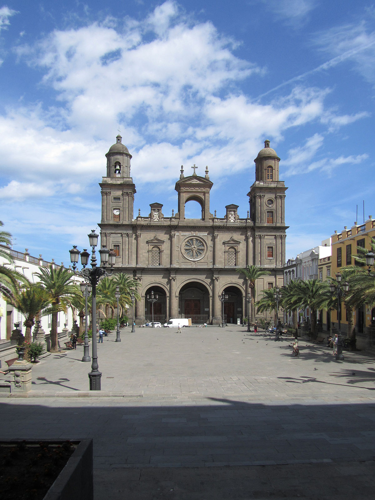

<ion-header>
  <ion-toolbar>
    <ion-title>modal</ion-title>
    <ion-buttons slot="end">
      <ion-button (click)="closeModal()">
        <ion-icon slot="icon-only" name="close"></ion-icon>
      </ion-button>
    </ion-buttons>
  </ion-toolbar>
</ion-header>

<ion-content>
  <ion-card>
    <div class="img-parent">
      
    </div>
    <ion-card-header>
      
      <ion-card-title>Card Title</ion-card-title>
    </ion-card-header>
  
    <ion-card-content>
      Keep close to Nature's heart... and break clear away, once in awhile,
      and climb a mountain or spend a week in the woods. Wash your spirit clean.
    </ion-card-content>
    <div style="text-align:center;">
      <ion-button fill="outline" class="" size="small" (click)="goToNextQuestion()">NEXT QUESTION >></ion-button>
</div>
  </ion-card>


</ion-content>
